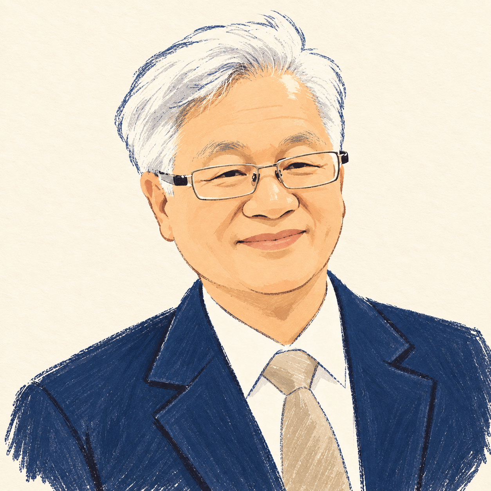
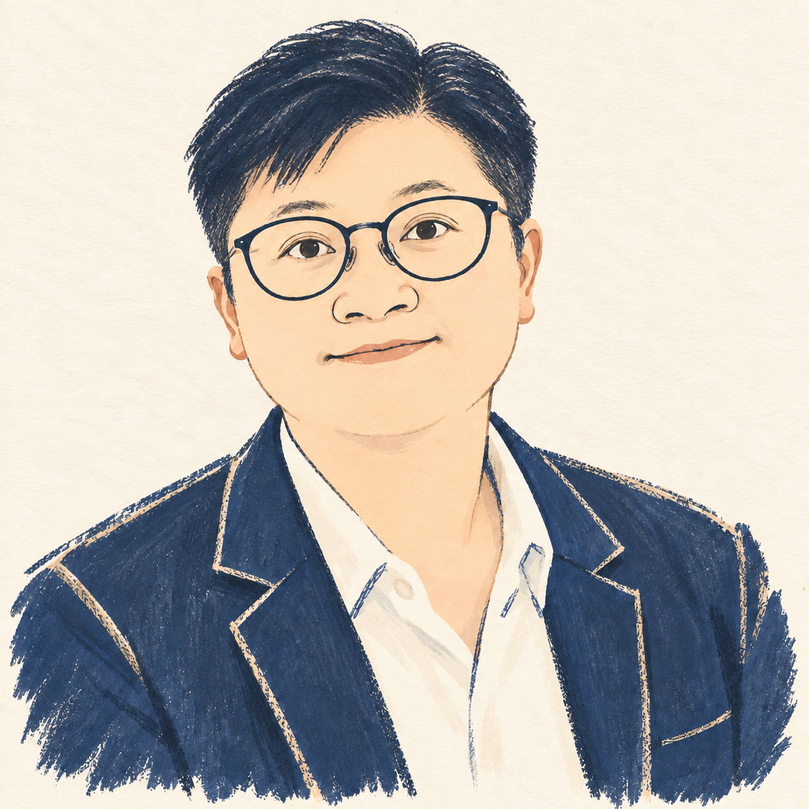

稅務與遺贈稅諮詢

曾祥嚞
會計師理解稅務細節，
思考每一步重要安排。
- 專業經歷
- 曾任職國稅局
- 擅長領域
- 稅務遺產稅贈與稅
結合國稅局任職經驗與稅務專長，協助釐清企業及個人稅務問題，並就遺產稅、贈與稅相關需求提供諮詢。
每一筆帳務、每一份報表，都連結著企業的日常與未來。我們相信，好的財務服務，始於理解您的需要。
宏彥自民國 99 年創立，以誠信、專業與創新為核心。由經驗豐富的會計師與會計助理密切合作，提供從日常帳務到財稅規劃的完整支持。
從創立至今
陪伴企業穩健前行
從成立、日常營運到成長規劃，
找到適合您的財稅服務。
把日常帳務整理清楚，讓經營更有方向。
以嚴謹的查核，建立值得信賴的財務資訊。
從創業起點到組織調整，陪您逐步完成。
釐清稅務問題，為重要決策做好準備。
從審計實務到稅務觀點，
以各自的專長，回應您的經營課題。

理解稅務細節，
思考每一步重要安排。
結合國稅局任職經驗與稅務專長，協助釐清企業及個人稅務問題，並就遺產稅、贈與稅相關需求提供諮詢。

以審計視角，
看見財務資訊的全貌。
關注財務資訊的可靠性與帳務脈絡，以審計、稽核與查帳專長，協助企業釐清財務報表及查核相關需求。
不必先了解所有專有名詞。
先告訴我們，您正在面對什麼。
是公司設立、日常帳務、財務查核，還是個人稅務安排？簡單說明目前情況，以及您想解決的問題。
可先整理相關年度、公司營運概況與重要時程。若涉及遺產稅或贈與稅，可先說明希望諮詢的方向。
透過初步聯繫，進一步討論需要的服務、相關資料與後續安排，讓雙方對下一步有清楚的理解。
可以在諮詢表單選擇「其他／尚不確定」，描述您的問題。不論是企業經營或個人稅務，先從實際情況開始討論即可。
初次聯繫可先說明需求與相關時程，待確認服務方向後，再討論所需資料與提供方式。請勿在網站表單填寫身分證字號、帳戶或其他敏感資訊。
請選擇「稅務諮詢」，並簡述希望了解的事項。您也可以直接來電，進一步討論諮詢安排。
從日常帳務到重要決策，
每個階段，都有宏彥。
無論是創業的第一個問題，
或是企業成長的新課題，歡迎與我們聊聊。
台北市中正區信義路二段33號5樓之4 · 近捷運東門站
填寫後將開啟您的郵件程式，請確認內容並寄出。